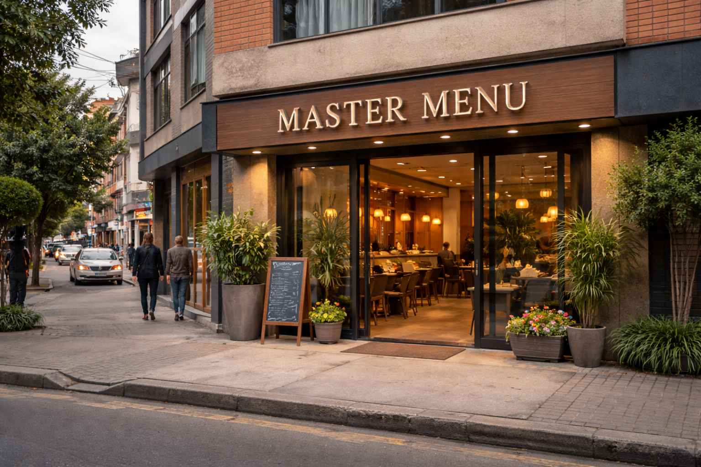

"La buena comida es la base de la felicidad genuina."
— Auguste Escoffier"Cocinar es un acto de amor que alimenta el alma y el cuerpo."
— Julia Child"Los sabores de la infancia son el hogar que siempre llevamos."
— Cocina colombiana"Un plato bien hecho no necesita adornos — habla solo."
— Tradición caseraCada día preparamos platos frescos con ingredientes de temporada. Consulta nuestra carta y elige lo que más te apetezca — siempre con sazón casera.
Planea tu visita con anticipación. Reserva en minutos directamente desde el portal y llega a disfrutar sin esperas ni contratiempos.
¿Prefieres comer en casa? Haz tu pedido en línea y lo llevamos hasta tu puerta. También disponible para recoger en el restaurante.